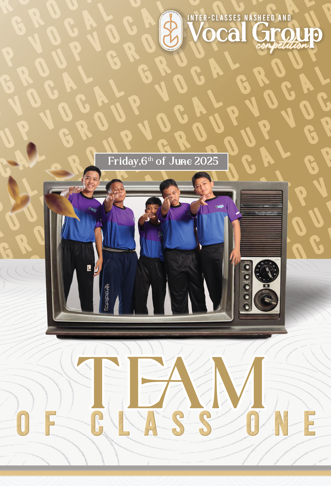
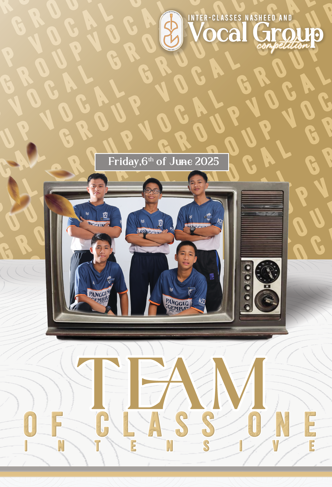
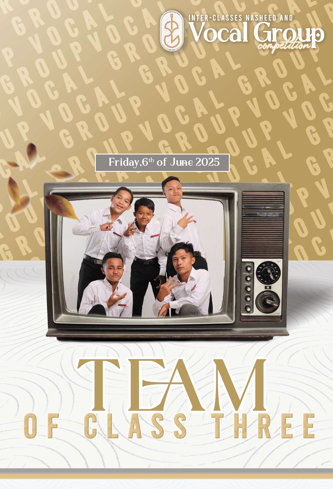
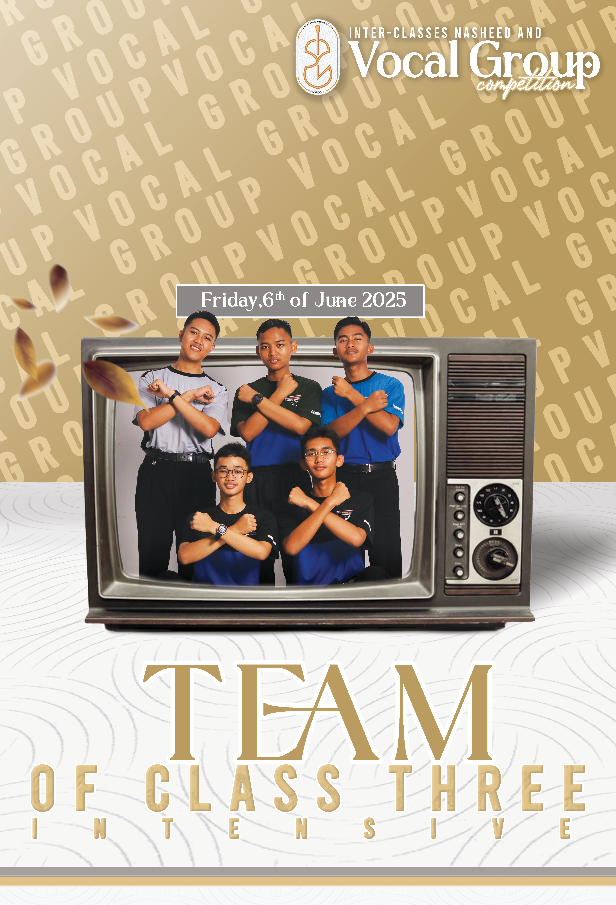
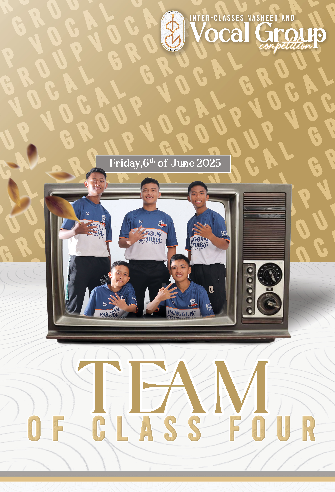

KELAS 1 - Lirik Folksong 🎶
Selalu ada di Nadimu
Kala nanti badai kan datang
Angin akan buat kau goyah
Maafkan hidup memang
Ingin kau lebih kuat
Andaikan saat itu datang
Kami tak ada menemai
Aku ingin engkau mendengar
Nyanyianku di sini
Sedikit demi sedikit
Engkau akan berteman pahit
Luapkanlah saja bila harus menangis
Kawanku ingatlah semua
Lelah tak akan tersia
Usah kau takut pada keras dunia
🎵 Aku Bisa
Kadang ku takut dan gugup
Dan kumerasa oh oh tak sanggup
Melihat tantangan di sekitarku
Aku merasa tak mampu
Namun ku tak mau menyerah
Aku tak ingin berputus asa
Dengan gagah berani aku melangkah
Dan berkata aku bisa..
Aku bisa, aku pasti bisa
Ku harus terus berusaha
Bila ku gagal tak mengapa
Setidaknya ku tlah mencoba
Aku bisa.. aku pasti bisa..
Ku tak mau berputus asa
Coba terus coba
Sampai aku bisa
AKU PASTI BISA,
AKU PASTI BISA
🎉 Ceria Anak Indonesia
Hai hai halo halo kawanku
Ku berjumpa lagi denganmu
Ayo kita bernyanyi ceriakan hari
Menghibur hati yang sedih
Ayo berkurban bersamaku
Tak perlu kau takut dan malu
Sungguh riang kini hatiku
Bila kau berkurban bersamaku
Yayayaya yaiyaiya
Kita berkurban bersama (sapi dan domba)
Kita selalu ceria, idul adha bahagia
🍪 Fortune Cookies
Walaupun diriku tak bisa terima
Lewati hariku yang penuh cobaan
Siap tuk lewati kesekian kalinya
Yeah, yeah, yeah!
Ketika kulihat di sekelilingku
Ternyata banyak sekali kawan yang baik
Slalu mengingatkan untuk jadi lebih baik
Yeah, yeah, yeah!
Saat ku melamun, terdengar musik
Mengalun di kafe La-dema
Tanpa sadar, kuikuti iramanya
Dan ujung jari pun mulai bergerak
P'rasaanku ini tak dapat berhenti
Come on, come on, come on, come on, Akhi!
Tolong, ramaikanlah
Di acara Folksong ini
Putarkan badan ke kanan juga ke kiri
Hey, hey, hey!
Mengembangkan senyuman
Akan membawa keberkahan
Folksong ini ceria sekali
Nasib lebih baiklah dari hari ini
Hey, hey, hey!
Hey, hey, hey!
Janganlah menyerah dalam menjalani hidup
Akan datang keajaiban yang tak terduga
Ku punya firasat 'tuk bisa jadi
Santriwan yang hebat
🫂 Sahabat Selamanya
Dua tiga kapal belayar di samudera
Ayo sahabatku kita bergembira
Belajar dan bernyanyi bersama di dalam folksong idul adha
Karna
Sahabat untuk selamanya
Bersama untuk selamanya
Kau dan aku sahabat
Untuk selamanya setia
Oh oh
Oh oh
Oh oh
Berakit-rakit kita ke hulu
Berenang-renang kita ke tepian
Kita berbeda untuk saling mengisi segala kekurangan kita
Menjadi
Sahabat untuk selamanya
Atasi semua perbedaan
Kau dan aku sahabat
Untuk selamanya
Selama-lamanya
Setia (2x)
"
>


KELAS 2 - Lirik Folksong 🎶
🎼 Tum Hi Ho
Nahnu min toloabatii faslii sanii
Nataghonaa bikulli sururin
Nahnu min tolabati fasli sanii
Natahammas fikulli amalin
Ya akhii..
Ya ustadziii…
Undzuruuuu sanataghonaa
Yaaa akhiii…
Yaaa ustadzii..
Nahnu min fasli saniii
👧🏻 Kumpul Bocah
Kaki kecil berlari kesana kemari
Sambil tertawa riang
Kedua tangannya diayun kiri kanan
Hari ini bahagia terbias di wajahnya
Slamat hari ulang tahun manis
Smoga kamu panjang umur
Cepat undang semua teman
Kita buat hari ini penuh riang
Berkumpul bersama teman
Dan bersenang-senang
Lala lala lalalala, lala lala lala uhuhuh
Pandanglah awan (Syalalala lalala lala)
Di atas bintang-bintang (Syalalala lalala lala)
Di sanalah semua santri santri
Turut bernyanyi riang
Inginkah kau pergi ke sana?
Terbang bersama kupu-kupu
Bermain pelangi (Syalalala lalala lala)
Bersama Ustadz Fakhri (Syalalala lalala lala)
Petiklah sebuah bintang
Dan bawalah pulang
Petiklah bintang
Dan bawalah pulang
Berikan kepada
Guru tersayang oh...
Berikan pada guru tersayang
Berikan pada guru tersayang
🍖 Jogja Istimewa
Makan daging , qurban
Enaknya ba..reng teman teman
Depan dapur uu..mum
Yang penting tersenyum
Tiba tiba datang si ghazza
Bawa daging onta
Kalau pengen bisa
Ya harus percaya ya harus mencoba
Nikmat benar rasanya
Oh di Idul Adha
Ber…. suka ria
Di folksong yang gembira
Ayo mari semua
Tertawa di Idul Adha
Lupakan semua duka lara
Yang penting kamu bahagia
Ayo mari semua
Tertawa di Idul Adha
Lupakan semua duka lara
Yang penting kamu bahagia
🌈 Menggapai Harapan
Menjadi santri yang soleh
Dipondok modern gontor
Disini bersama
Di darussalam
Di folksong gembira ini
Bersiap bersaing lagi
Jadi yang terbaik di darussalam
Inilah diri kami
Seseorang yang tak berdaya
Doakanlah agar kami
Bisa menggapai segala harapan
Setelah mimpi panjang tiada akhir
Dipondok ini untuk menjadi juara
Dalam folksong gembira ini
Maafkanlah segala kesalahan
Yang telah berlalu
Inilah perjuangan
Di kelas 2
🔁 Heavy Rotation
1, 2, 3, 4!
Annahwu (Annahwu) Asshorfu (Asshorfu)
Alfiqhuu (Alfiqhuu) wal muthola’atu
Akan teringat yang tlah kau berikan slalu, kami dari kelas 2
Seperti semangatku yang menggebu gebu
Inilah kami dari kelas 2
Wajahmu suaramu selalu ku ingat
Membuatku menjadi lebih semangat
Oh senangnya miliki kenangan ini
Ku sangat merasa beruntung
Annahwu (Annahwu) Asshorfu (Asshorfu)
Alfiqhuu (Alfiqhuu) wal muthola’atu
Slalu teringat yang tlah kau berikan slalu, kami dari kelas 2
🌞 Cahaya Esok Hari
Tak ada manusia hidup dan sempurna
Semua berusaha meraih mulia
Waktu akan berjalan senang akan berputar
Bahagia kan tiba baskara bersinar
Bila jatuh bangkit lagi
Bila rapuh kuatkan kaki
Berdiri dan hadapi
Allah ‘kan menyertai
Dan bila esok harapmu t’lah sirna
Bersabarlah dan menanti asa tiba
Niscaya ‘kan kau temukan
Bunga-bunga bermekaran
Semerbak harum menyambut masa depan
Dan bila esok harapmu t’lah sirna
Bersabarlah dan menanti asa tiba
🎤 Lirik Nasyid
Verse 1:
Inilah kehidupan
Ku jalani jatuh bangkitnya
Dengan penuh harapan
Ku kan terus maju dan mencoba
Verse 2:
Bila kita percaya
Semuanya akan indah
Tak ada kata lelah
Karna semua menjadi lillah
Bridge:
Awan gelap
Dan badai yang mendera
Akan berubah menjadi Pelangi yang indah
Reff:
Jalannya takkan pernah hilang
Meski ditelan malam
Doa-doa yang dilangitkan
Tak salah berpulang
Tak ada yang bisa jatuhkan
Karna ku tak sendirian
Dan yakinlah bila Bersama
Kita bisa melaluinya
Chorus:
Kau s’lalu ada
Di nadiku
Selamanya
Bridge (ulang):
Awan gelap
Dan badai yang mendera
Akan berubah menjadi Pelangi yang indah
Reff (ulang):
Jalannya takkan pernah hilang
Meski ditelan malam
Doa-doa yang dilangitkan
Tak salah berpulang
Tak ada yang bisa jatuhkan
Karna ku tak sendirian
Dan yakinlah bila Bersama
Kita bisa melaluinya
"
>

Kelas 3
🎬 Putri Iklan St21
Pagi yang indah dan berseri
Takbir suci mengguncangkan hati
Kulihat santri penuh arti
Langkah perlahan di hari suci
Namun, sungguh damai
Semua terasa penuh makna
Syukur ku ya Rabbi
Terang cahaya hati
Hati bergetar dengan takbirnya
Jiwaku tenang penuh harapan
Mari berqurban tulus di hati
Bukti cinta sejati
Tak jauh seperti teladan suci
Kan kujalani sepenuh hati
Sapi dan kambing sudah menanti
Menyambut hari suci
😊 Bahagia itu Mudah
Setiap insan terlahir didunia
Selalu berharap untuk bahagia
Namun terkadang sulit tuk wujudkannya
Tapi ingatlah jangan berputus asa
Tak pernah merasa tuk cukup adanya
Selalu inginkan yang tak pernah ada
Sulit menemukan segala upaya
Cara bagaimana tuk bahagia
Bahagia itu mudah
Jika kita selalu syukuri nikmatnya
Tanpa pernah mengenal tuk berputus asa
Selalu bersama dalam suka ataupun duka
Bahagia itu mudah
Walau sederhana tapi indah penuh makna
Tak perlu berkeluh kesah tuk kekurangannya
Semua kan indah pada waktunya
🌻 Gala Bunga Matahari
Mungkinkah? Mungkinkah? Mungkinkah? Kau mampir hari ini
Bila tidak bisa kau, datanglah meski dalam mimpi
Yang tiba-tiba lambai di taman
Meski bicara dengan bahasa isyarat
Ceritakan padaku
Bagaimana tempat tinggalmu yang baru
Adakah pagi-pagi itu benar-benar
Dilintasi dengan canda tawa
S’moga badanmu tak sakit sakit lagi
Kau dan orang-orang disana senang s’kali
Semua pertanyaan, temukan jawaban
Hati yang gembira, sering kau tertawa
Benarkah orang bilang Ayah memang suka bercanda
Mungkinkah? Mungkinkah? Mungkinkah? Kau mampir hari ini?
Bila tidak bisa kau, datanglah meski dalam mimpi
Kangennya masih ada di setiap waktu
Kadang aku menangis bila aku perlu
Tapi aku sekarang sudah lebih tangguh
Jadilah menyenangkan seperti katamu
Jalani hidup dengan penuh suka cita
Dan percaya kau ada di hatiku
Selamanya
Mungkinkah? Mungkinkah?
Mungkinkah? Kau mampir hari ini?
Bila tidak sekarang, janji kita pasti ’kan bertemu lagi
"
>

🎤 Kelas 3 Intensif
🎶 Lirik Folksong - Stecu
Wahai kawan-kawanku yang bergembira
Terimalah lagu kami yang ceria
Doakanlah kami juara
Di acara folksong gembira
Semoga berkenan di hati semua
📍 Di Sayidan
Oh coba kawan kau dengar ku punya cerita
Tempat biasa aku berbagi rasa
Duka duka dirasa bersama
Di asrama di Darussalam namanya
Mari sini berkumpul kawan wo oh
Nanyi-nyanyi sambil tertawa
Bila kau datang dari arah Yaman
Lurus saja sampai kantor yayasan
Belok kanan setelah perempatan
Kawan-kawan sudah menunggu di depan
🎤 Di Vocal Group Antar Kelas
Angkat sekali lagi suaramu kawan
Di Vocal Group antar kelas
Menyambut hari raya Idul Qurban
🐐 Anak Kambing Saya
Mana dimana kambing kurban saya
Kambing kurban tuan ada di depan Yaqdzoh
(diulang 2x)
Caca marica he hey (2x)
Caca marica ada di depan Yaqdzoh (2x)
Mana dimana Sapi kurban saya
Sapi kurban tuan ada di depan Yaqdzoh
(diulang 2x)
Caca marica he hey (2x)
Caca marica ada di depan Yaqdzoh (2x)
Mana dimana hewan kurban saya (3x)
“Hewan kurban tuan ada di depan kita” (ALL)
✈️ Pesawat Tempur
Waktu kau lewat aku sedang mainkan gitar
Sebuah lagu yang kunyanyika tentang dirimu
Seperti kemarin kamu hanya lemparkan senyum
Lalu pergi begitu saja bagai pesawat tempur
Hei...Kau yang pandai singgahlah dan ikut bernyanyi
Sebentar saja akhi, sebentar saja hanya sebentar
Nyanyian laguku tak membuat kau jadi galau
Bagai seorang santri di Gontor kita bersatu
Hey akhi......Hey akhi.......
Belajarlah dan mengaji
Belajar mengaji (2x)
(back to reff 2x)
☕ Kopi Dangdut
Kala kupandang kerlip bintang jauh disana
Sayup kudengar melodi santri yang menggema
Terasa kembali gelora jiwa mudaku
Kar’na tersentuh alunan lagu semerdu kopi hanger
🌟 Lirik Nasyid
Langkah di bumi yang luas
Terlahir suci tanpa beban
Mata terbuka, jiwa pun bertanya
Untuk apa semua ini ada?
Di antara suku dan derita
Insan belajar makna setia
Jatuh berdiri, luka jua terobati
Aku hanya insan biasa
Yang ingin dekat dengan-Nya
Meski tak luput dari disa
Hati terus meminta
Menjadi cahaya dalam gelap
Menjadi tenang dalam gunda sedih gelisah
Karena aku pun tau, dia tak jauh
Dari insan mulia
"
>

🎤 Kelas 4
🎶 Lagu: Yang Terbaik Bagimu ~ Terima Kasih Ayah
Teringat masa kecilku kau peluk dan kau manja
Indahnya saat itu buat ku melambung
Disisimu terngiang hangat napas segar harum tubuhmu
Kau inginkan menjadi yang terbaik bagimu
Patuhi perintahmu jauhkan godaan
Yang mungkin ku lakukan dalam waktuku beranjak dewasa
Jangan sampai membuatku terbelenggu jatuh dan terinjak
Reff:
Tuhan tolonglah sampaikan sejuta sayangku untuknya
Ku terus berjanji tak kan khianati pintanya
Ayah dengarlah betapa sesungguhnya ku mencintaimu
Kan ku buktikan ku mampu penuhi maumu
🚶♂️ Lagu: Kuy Hijrah
Alright, kau yang sedang tenang-tenang
Tidur di kelas, aduh, sayang
Lupakan ngaji, sungguhlah malang
Nau’dzubillah, alright, alright, alright
Alright, ’pabila ujian datang
Soal hafalan semua hilang
Bagaimanakah nasib mendatang?
Alright, alright, alright
Dan kuy, kuy, kuy, kuy, yok kita sadar
Dan kuy, kuy, kuy, ayo belajar
Dan kuy, kuy, kuy, niat ibadah
Alright, alright, alright
🕌 Lagu: Hari Qurban
Di hari idul adha
Kita berbahagia
Ada sapi dan unta
Dan juga kambing domba
Kudengar suaranya, MOO
Hatiku Bahagia
Ayo teman semua
Kurban di idul adha
⚖️ Lagu: Taat pada Aturan
Akhi akhi akhi janganlah bersedih kamu tak sendiri
Dakwah sana sini, kesana kemari
Mencari solusi
Tetap tenang kawan, tetaplah tersenyum
Kamu pasti bisa
Tidak perlu ngeluh, tidak perlu sedih
Mari nyanyi bersama
Hidup tenang jika ikut aturan
Kalau tidak malah kena hukuman
Kelas empat harus taat aturan
Agar jadi teladan bagi teman
👑 Lagu: Bahasa Adalah Mahkota
Kosakata di pagi hari
Selalu ku tulis di dalam kuteb
Tidak hanya ku tulis saja
Tapi ku pakai setiap saat
Bahasa Arab Bahasa Inggris
Itu adalah mahkota kita
Ayolah kawan jaga bahasa
Karena ia mahkota kita
📝 Lagu: Ngantri di KMI
Ngantri depan KMI
Ingin meminta izin
Piket rayon di hari ini
Tuk jaga rayon kami
Sambil nunggu keamanan
Ngobrol sana sini
Lalu datang keamanan
Eh langsung arahin kami
Ayok kita minta tasrih
Ke wali kelas
Abis itu pergi ngantri
Di kantor KMI
Ngantri depan KMI
Ingin meminta izin
Piket rayon di hari ini
Tuk jaga rayon kami
🎭 Lagu: Seventeen ~ Yok Kelas Lima
Di tempat ini kita bernyanyi
Di panggung yang penuh dengan mimpi
Waktu berjalan cepat sekali
Hari ini waktunya beraksi
Saksikanlah s’mua persembahan dari kita
Semata untuk menghibur anda
Mohon restunya serta doanya
Tahun depan kita kelas lima
Reff:
Inilah penampilan dari kami untuk kamu semua
Dalam folksong kelas yang sangat bergembira
Terima kasih untuk kawan semua
Bersama tahun depan tampil di drama arena
🌌 Lirik Nasyid
Jalan sepi yang kulewati t’lah bawaku kembali
Dari gelap di hati ini, dari segala yang menyakiti
Namun waktu telah berlalu, cahaya membawaku
Dalam terang anugerahmu, yang Kau balut cinta kasih-Mu
Tuhan, Kau seru aku kembali ke jalan-Mu
Tanpa hidayah-Mu, kukan jauh hidup dalam hampa
Ku harap rahmat-Mu, selalu menyertaiku
T’lah ku tinggal segala yang berlalu kembali kepada-Mu
Bukakanlah bagiku rahmat-Mu
Terangi cahaya-Mu
Lapangkanlah, lapangkanlah jalanku pada-Mu
Tuhan, Kau seru aku kembali ke jalan-Mu
Tanpa hidayah-Mu, kukan jauh hidup dalam hampa
Ku harap rahmat-Mu, selalu menyertaiku
T’lah ku tinggal segala yang berlalu kembali kepada-Mu
Astagfirullahal ‘Azhim
Astagfirullahal ’Azhim
Min kulli dzanbin ‘Azhim
La yaghfirudz dzunuba illa, illa Rabbul ‘Alamin
"
>
 -MapsGedung Olahraga Pondok Modern Darussalam GontorPetunjuk Ke Lokasi-Sisa Momen00Hari00Jam00Menit00DetikWaktu semakin dekat! Jangan lewatkan momen spesial ini. Mari bergabung bersama kami dalam acara Vocal Group Competition ini.-Merupakan kebahagiaan dan kehormatan bagi kami, apabila Anda berkenan hadir dan menikmati rangkaian acara Vocal Group Competition ini bersama kami.Hormat Kami panitiaVocal Group Competition
-MapsGedung Olahraga Pondok Modern Darussalam GontorPetunjuk Ke Lokasi-Sisa Momen00Hari00Jam00Menit00DetikWaktu semakin dekat! Jangan lewatkan momen spesial ini. Mari bergabung bersama kami dalam acara Vocal Group Competition ini.-Merupakan kebahagiaan dan kehormatan bagi kami, apabila Anda berkenan hadir dan menikmati rangkaian acara Vocal Group Competition ini bersama kami.Hormat Kami panitiaVocal Group Competition